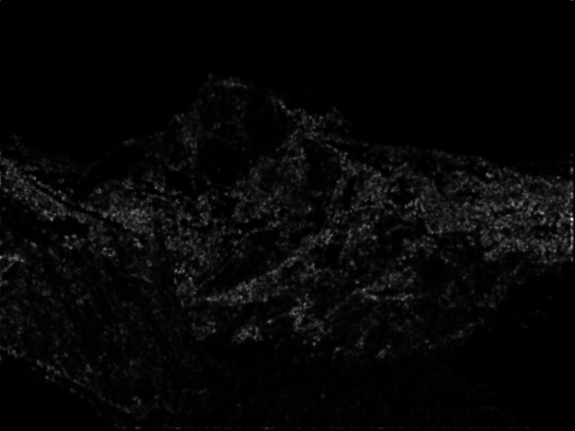
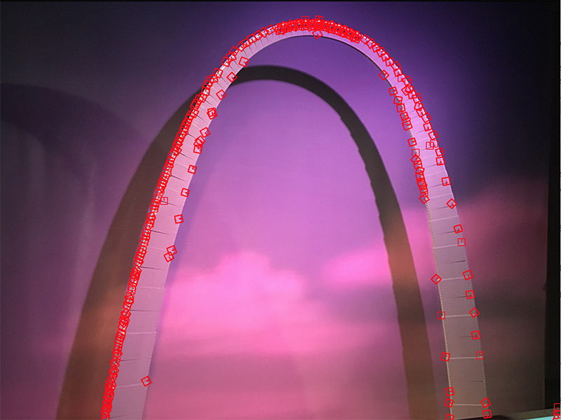

| Type |
AUC |
| Simple + SSD |
0.608649 |
| Simple + ratio test |
0.573974 |
| MOPS + SSD |
0.765252 |
| MOPS + ratio test |
0.844154 |
| Type |
AUC |
| Simple + SSD |
0.835979 |
| Simple + ratio test |
0.852168 |
| MOPS + SSD |
0.872381 |
| MOPS + ratio test |
0.926571 |
| Harris Operators for graf img2 |
Harris operator for Yosemite2 |
|  |
| Simple + SSD |
0.238829 |
| Simple + ratio test |
0.537193 |
| MOPS + SSD |
0.859272 |
| MOPS + ratio test |
0.851477 |
| Simple + SSD | 0.537193 |
| Simple + ratio test | 0.548594 |
| MOPS + SSD | 0.652583 |
| MOPS + ratio test | 0.713437 |
| Simple + SSD | 0.218876 |
| Simple + ratio test | 0.543421 |
| MOPS + SSD | 0.772601 |
| MOPS + ratio test | 0.861201 |
| Simple + SSD | 0.348707 |
| Simple + ratio test | 0.618277 |
| MOPS + SSD | 0.751342 |
| MOPS + ratio test | 0.782445 |
|  |